レベルデザイン基礎 演習 H02
第2回：Canvas とアンカー
2026-10-15
本日の配布物
H02_CanvasAnchor.unitypackage（作例 Ex01〜Ex09 の完成シーンと SafeAreaRoot.cs）
前回作った DesignPrinciples2026 プロジェクトをそのまま使います。メニューバーの Assets → Import Package → Custom Package... でこのファイルを選び、Import を押すと Assets/Lessons/H02_CanvasAnchor/ に入ります。
今日は、ゲームの画面に UI を貼りつける仕組みを手で確かめます。ボタンを 1 つ置き、画面の比率や解像度を変えたときに「消える」「欠ける」「小さくなる」といった事故を起こしてから、アンカー、セーフエリア、Canvas Scaler で直していきます。
同じ日の 1 コマ目の講義（D02、原理編 第2章「画面とアンカー」）で聞いた話を、ここでは自分の手で再現します。章は、前回の講義 D01（第1章）で学んだ三つの層の順に並べています。
0. はじめに：三つの層と土台
前回の講義 D01（原理編 第1章）では、ゲームのデザインが扱う範囲を三つの層に分けました。
- 体験の層：操作したときの手応えや迷いにくさ
- 情報の層：何を、どんな順番で、どれくらいの強さで見せるか
- 見た目の層：色、形、レイアウト、フォント
そして、この三つの層を載せる土台が画面そのものです。ゲームの画面は、機種や設定で解像度もアスペクト比（縦と横の比率）も変わります。土台がずれると、その上の三つの層がまとめて崩れてしまいます。今日の講義 D02（原理編 第2章）は、この土台の話でした。
この演習では、土台がずれたときに各層で何が壊れるのかを順に見ていきます。体験の層ではボタンが消えたり欠けたりして押せなくなり、情報の層では帯や通知が途中で切れ、見た目の層では UI の大きさの比率が変わります。どの層が壊れたのかが分かれば、直す道具も決まります。
配布シーンの Ex 番号は Unity で作業しやすい順に付けています。このページは層の順に並べているので、番号が飛ぶところがあります。前提の状態をどのシーンで用意するかは、作例ごとに書いています。
1. 準備：土台を置く
層の話に入る前に、UI を描くための土台を用意します。ボタンを 1 つ作ると、土台になる Canvas と、クリックを受け付ける EventSystem が一緒に作られます。続けて、UI の位置と大きさを決める Rect Transform（レクト トランスフォーム）の欄を読み、1 つだけ値を変えて動きを確かめます。
ボタンを 1 つ置く
Assets/Lessons/H02_CanvasAnchor/Scenes/Ex01_FirstCanvas.unity
メニューからボタンを作ると、Game ビューの真ん中に小さな「Button」が表示されます。
使うもの
- キャンバス（Canvas）：UI を描く台紙です。UI の部品はすべてこの子にします
- Button - TextMeshPro：押せるボタンです。文字は TextMeshPro（TMP、くっきり表示できる文字の仕組み）で描きます
- イベントシステム（EventSystem）：マウスやタッチの入力を、どの UI が受け取るか振り分けます
手順
- 前回のプロジェクトで、試し用のシーン（SampleScene など）を開いた状態にします
- Hierarchy ウィンドウの何もないところを右クリックします
- UI (Canvas) → Button - TextMeshPro をクリックします
- 初めて TextMeshPro を使うプロジェクトでは「TMP Importer」ウィンドウが開きます。Import TMP Essentials をクリックします
- 取り込みが終わったら、TMP Importer ウィンドウを左上の閉じるボタンで閉じます（Examples & Extras は今日は使いません）
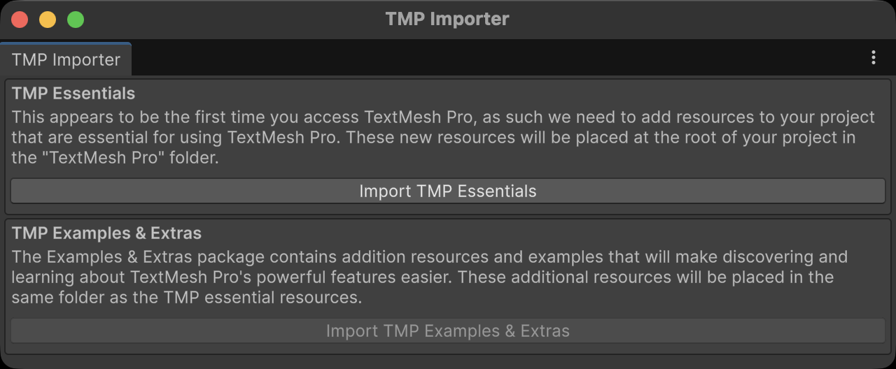
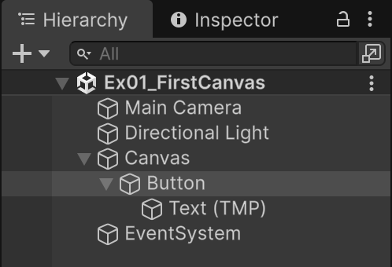
確認：Hierarchy に Canvas・Button・Text (TMP)・EventSystem の 4 つが並び、Game ビューの中央に「Button」と書かれた白いボタンが見えることを確認します。
配布の unitypackage を先に取り込んだ場合も、シーンを開いたときに同じ TMP Importer が出ます。そのときも Import TMP Essentials を押せば、ボタンの文字が表示されます。後から入れたいときは、メニューバーの Window → TextMeshPro → Import TMP Essential Resources でも同じ画面を開けます。
Canvas と EventSystem がしていること
Canvas を選ぶと、Inspector に Canvas・Canvas Scaler・Graphic Raycaster の 3 つのコンポーネントが付いています。Canvas は UI をどこに描くか（Render Mode）を決め、Canvas Scaler は画面の大きさに合わせて UI を拡大縮小します。Graphic Raycaster は、クリックされた位置にどの UI があるかを調べる係です。
EventSystem は、その調べた結果を受けて「このボタンが押された」と伝える係です。EventSystem を消すとボタンは見えたままでも押せなくなるので、UI を置いたシーンには必ず 1 つ残しておきます。
Scene ビューで Canvas が巨大に見える理由
Scene ビューで Canvas を見ると、カメラやライトに比べてとても大きな白い枠になっています。Render Mode が Screen Space - Overlay の Canvas は、画面の 1 ピクセルを 3D 空間の 1 メートルとして表示するためです。Game ビューが 1920 x 1080 なら、Canvas は幅 1920 メートルの板として描かれます。
Hierarchy で Canvas を選び、Scene ビューにマウスを乗せて F キー（Frame Selected：選んだものに視点を合わせる）を押すと、全体が見えるところまで視点が下がります。Scene ビュー上部のツールバーにある 2D ボタンを押すと、Canvas を正面から平らに見られます。
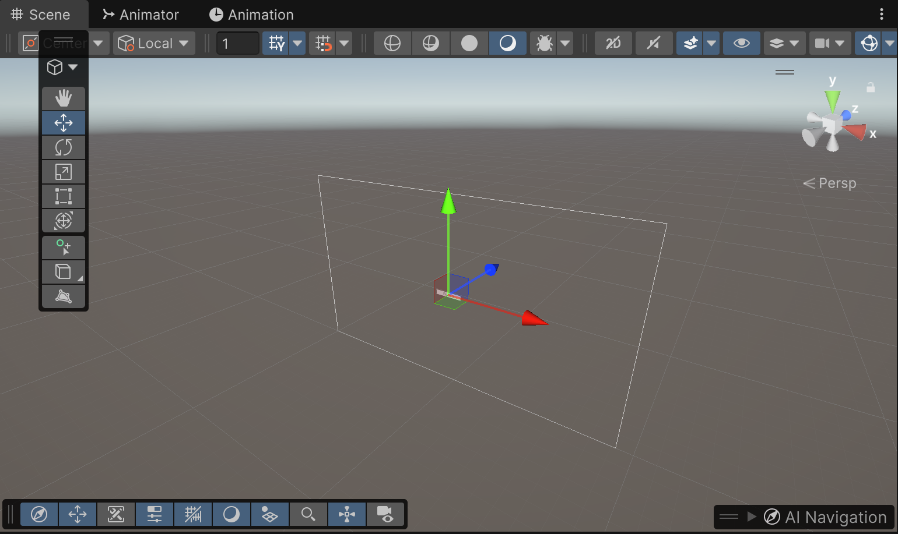
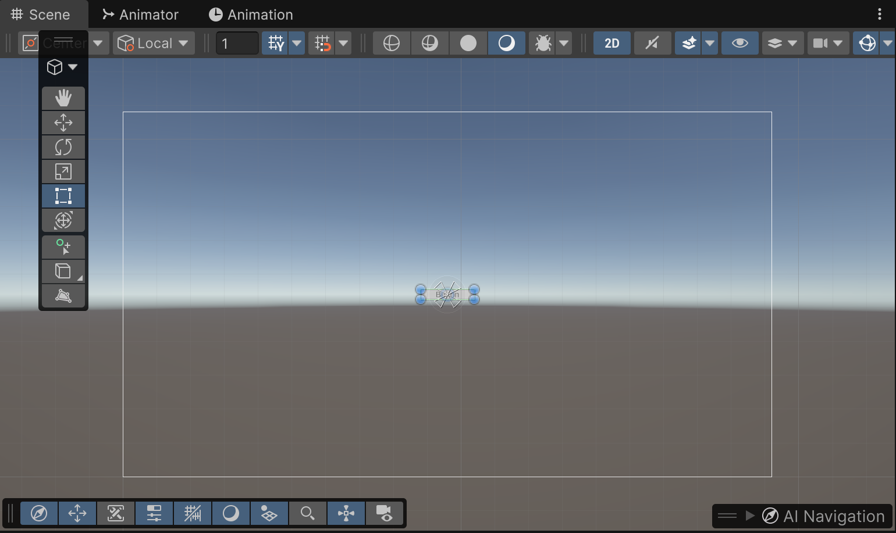
3D のゲームを作っている途中で UI を触るときは、2D に切り替えて F を押す、を覚えておくと迷いにくくなります。
Pos X を変えてボタンを動かす
Assets/Lessons/H02_CanvasAnchor/Scenes/Ex02_RectTransform.unity
前の作例と同じボタンの Pos X を 0 から 300 にすると、ボタンが画面の中央から右へ 300 ピクセル動きます。
使うもの
- Rect Transform：位置と大きさを「親の四角形との関係」で決めます
- Game ビューの解像度メニュー：Game ビューを何ピクセルの画面として表示するかを選びます
手順
- Game ビュー上部のツールバーで、Free Aspect と書かれたドロップダウンをクリックし、Full HD (1920x1080) を選びます
- Hierarchy で Button をクリックします
- Inspector の Rect Transform で Width に
240、Height に80を入力します（入力したら Enter） - Pos X に
300を入力します
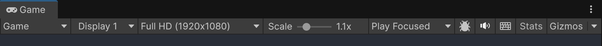
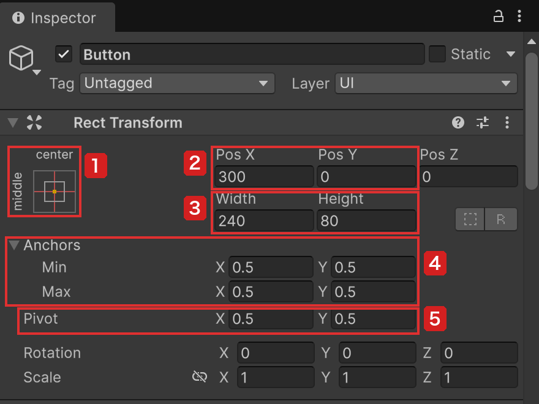
| 番号 | 欄 | 意味 |
|---|---|---|
| 1 | Anchor Presets（四角いアイコン） | アンカーの置き場所を一覧から選ぶボタンです。上に今の置き場所（center / middle）が書かれています |
| 2 | Pos X / Pos Y | アンカーから見た、要素の基準点（ピボット）の位置です。単位はピクセルです |
| 3 | Width / Height | 要素の幅と高さです |
| 4 | Anchors（Min / Max） | 親の四角形のどこに留めるかです。0 が左（下）、1 が右（上）、0.5 が真ん中です |
| 5 | Pivot | 要素自身のどこを基準点にするかです。0.5, 0.5 なら要素の中心です |
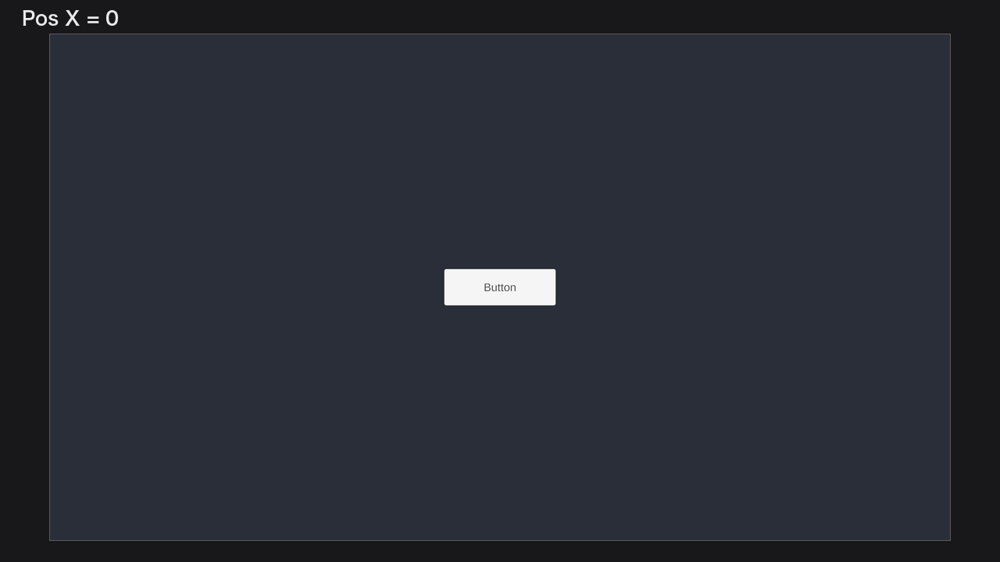
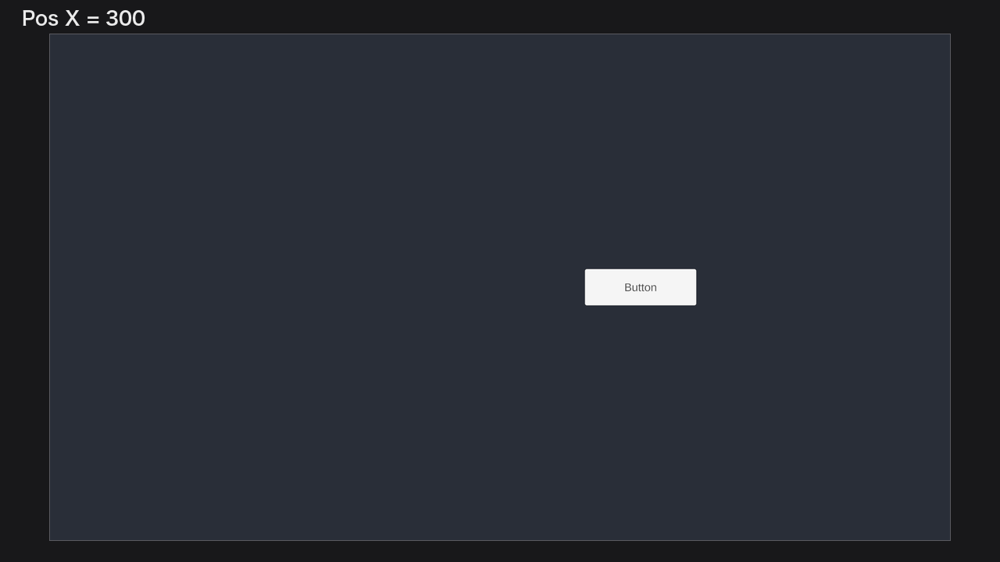
確認：Pos X を 0 と 300 で入れ替えると、ボタンが左右に動くことを確認します。300 のとき、ボタンの中心は画面の左端から 960 + 300 = 1260 ピクセルの位置にあります。
「0」はどこから測っているか
Pos X = 0 が画面の中央になるのは、アンカーが中央（Anchors がすべて 0.5）にあるからです。Rect Transform の位置は、いつも「アンカーから、ピボットまでの距離」で書かれています。次の章では、このアンカーが中央のままだと何が起きるか、そしてアンカーを動かすと同じ Pos X の意味がどう変わるかを確かめます。
2. 体験の層：押せるか、届くか
この層で守るのは、プレイヤーが押したいボタンを、どの画面でも見つけて押せることです。画面を縦長にしたら右上のボタンが見当たらない、スマホで遊んだらボタンの角がノッチに隠れて押しにくい、という場面は、どちらも体験の層が壊れた状態です。
この章では、まずアンカーを中央にしたまま画面の形を変え、ボタンが消える事故をわざと起こします。次にアンカーで右上に留め、最後にスマホのノッチや角丸で欠ける事故を、セーフエリアで防ぎます。
アンカーが中央のまま右上に置く（事故）
Assets/Lessons/H02_CanvasAnchor/Scenes/Ex03_AnchorAccident.unity
前の作例と同じボタンを右上へ動かし、Game ビューを縦長にすると、ボタンが画面の外に消えます。
使うもの
- Rect Transform の Pos X / Pos Y：ボタンを右上へ動かします
- Game ビューの解像度メニュー：縦長の画面サイズを追加して切り替えます
手順
- Hierarchy で Button を選び、Pos X に
800、Pos Y に460を入力します（ボタンが画面の右上に移ります。1920 x 1080 では、ボタンの右端と上端が画面の端からちょうど 40 ピクセル内側に来る値です） - Game ビューのツールバーで Full HD (1920x1080) と書かれたドロップダウンをクリックします
- 一覧のいちばん下にある + をクリックします
- Add の画面で Label に
Portrait、Type に Fixed Resolution、Width & Height の X に1080、Y に1920を入力し、OK をクリックします - 一覧に追加された Portrait (1080x1920) をクリックします
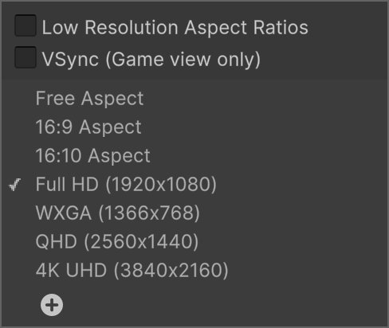
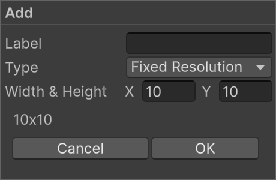
確認：Portrait (1080x1920) にするとボタンが見えなくなり、Full HD (1920x1080) に戻すと再び右上に現れることを確認します。
ボタンが消える理由
アンカーが中央なので、Pos X = 800 は「画面の中心から右へ 800」という意味です。1920 x 1080 では中心が左から 960 なので、ボタンの中心は 960 + 800 = 1760 にあり、画面の中に収まります。
縦長の 1080 x 1920 では中心が 540 になるので、ボタンの中心は 540 + 800 = 1340 です。画面の幅は 1080 しかないため、幅 240 のボタンは左端（1340 − 120 = 1220）まで丸ごと画面の外に出てしまいます。
アンカーを右上にする
Assets/Lessons/H02_CanvasAnchor/Scenes/Ex04_AnchorTopRight.unity
前の作例と同じボタンのアンカーだけを右上に変えると、画面を縦長にしてもボタンが右上に残ります。
使うもの
- アンカー（Anchor）：要素を親の四角形のどこに留めるかを決める基準点です
- Anchor Presets：アンカーの置き場所を 4 x 4 のマスから選ぶ画面です
手順
- Game ビューを Full HD (1920x1080) に戻します
- Hierarchy で Button を選び、Inspector の Rect Transform 左上にある四角いアイコン（Anchor Presets）をクリックします
- 開いた一覧で、列が right、行が top のマス（右上）を、何もキーを押さずにクリックします
- Pos X が
-160、Pos Y が-80に変わったことを確かめます - Game ビューを Portrait (1080x1920) に切り替えます
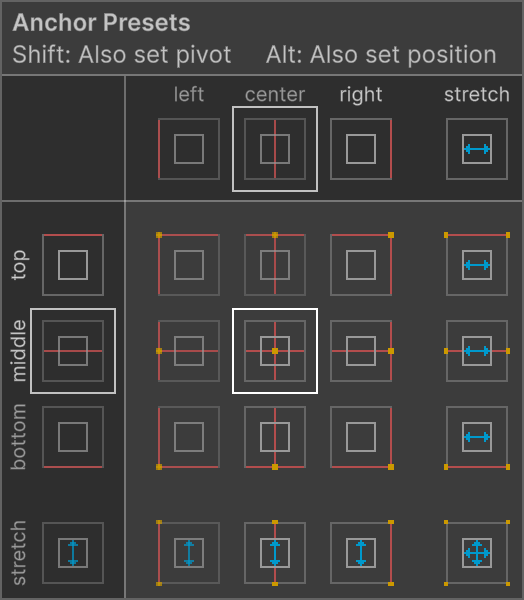
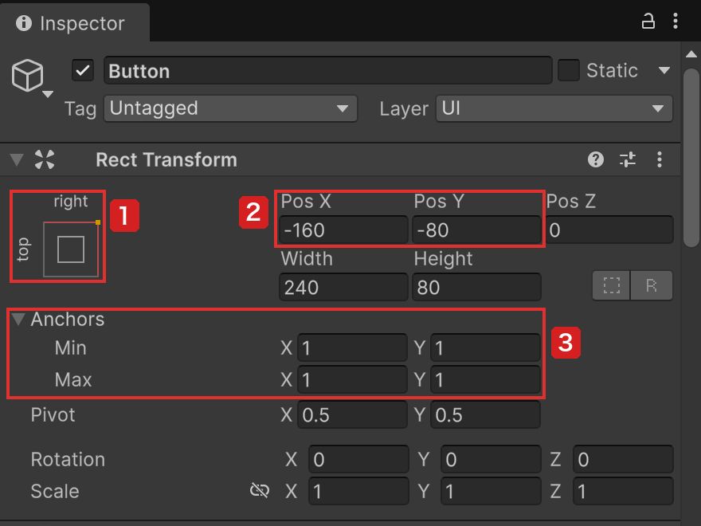
確認：Portrait (1080x1920) でも Full HD (1920x1080) でも、ボタンが右上の同じ距離のところに表示されることを確認します。
Pos X = -160 が意味すること
アンカーを右上にすると、Pos は「右上の角から、ボタンの中心まで」の距離になります。Pos X = -160 は右端から左へ 160、Pos Y = -80 は上端から下へ 80 です。ボタンの幅は 240 なので、ボタンの右端は画面の右端から 160 − 120 = 40 ピクセル内側にあります。
Ex03 でボタンを置いたときの「端から 40 ピクセル内側」という余白を、アンカーを右上にすることで、どの画面でも保てるようになったわけです。この「右端から 40」は、画面の幅が 1920 でも 1080 でも変わりません。何もキーを押さずにクリックした場合、Unity は見た目の位置を保ったまま、数字だけを新しいアンカー基準に書き換えてくれます。
| クリックのしかた | Pivot | Pos X / Pos Y | 見た目 |
|---|---|---|---|
| そのままクリック | 0.5, 0.5 | -160 / -80 | 動かない |
| Shift を押しながら | 1, 1 | -40 / -40 | 動かない（ボタンの右上の角が基準になる） |
| Shift + Alt（Mac は Option）を押しながら | 1, 1 | 0 / 0 | 画面の右上の角にぴったり付く |
隅にぴったり付けたいときは Shift + Alt（Option）、今の位置を保ちたいときはそのままクリック、と使い分けると便利です。
Device Simulator でスマホの画面を見る
Assets/Lessons/H02_CanvasAnchor/Scenes/Ex08_DeviceSimulator.unity
前の作例では、画面の形が変わってもボタンを右上に留められるようにしました。ところがスマホでは、その隅そのものがノッチや角丸で欠けています。画面の隅に部品を置いた HUD を、ノッチのある iPhone の横持ちで表示すると、右上と右下の部品の角が欠けます。
このシーンには、第3章の「やってみよう」で作る HUD（HP・Score・MiniMap・Message の 4 つ）と、第4章で扱う Canvas Scaler の設定が先に入っています。ここでは大きさの設定は気にせず、端の部品が欠けるかどうかだけを見ます。
使うもの
- Device Simulator：Game ビューの代わりに、実在するスマホの形と画面で表示する機能です
- セーフエリア（Safe Area）：ノッチや角丸に隠されず、確実に表示される範囲です
手順
- Project ウィンドウで
Assets/Lessons/H02_CanvasAnchor/Scenes/Ex08_DeviceSimulatorをダブルクリックして開きます - Game ビュー左上の Game と書かれたドロップダウンをクリックし、Simulator を選びます
- ツールバーの端末名のドロップダウンをクリックし、Apple iPhone 12 を選びます
- ツールバーの Rotate の矢印ボタンを押して、ノッチが右側に来る横向きにします
- ツールバーの Safe Area を押してオンにします（セーフエリアが黄色い枠で表示されます）
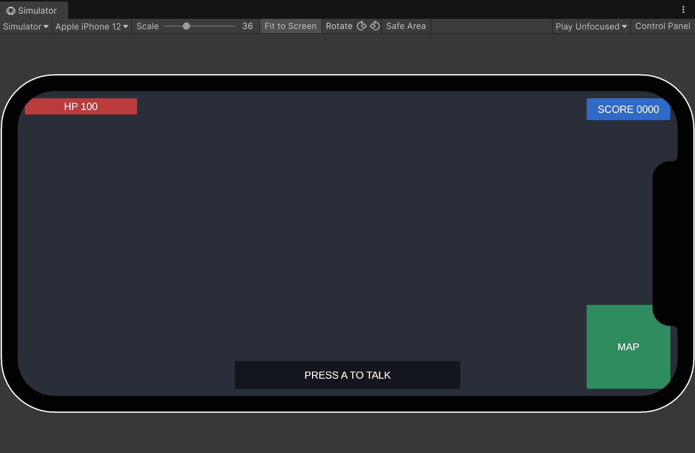
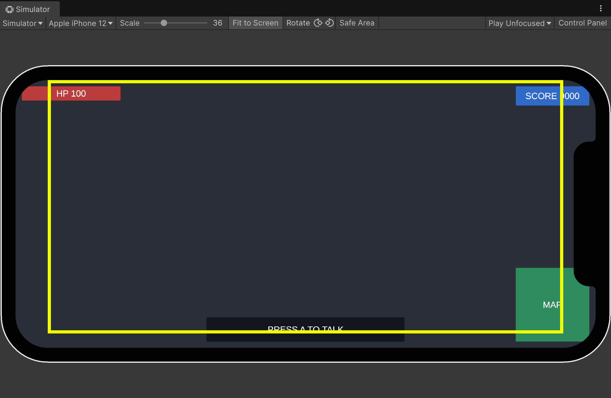
確認：iPhone 12 の横持ちで、画面の端に置いた HUD の部品がセーフエリアの外にはみ出し、角丸やノッチで欠けていることを確認します。
エディタでは気づけない事故
iPhone 12 の画面は 2532 x 1170 ピクセルで、横持ちのセーフエリアは左右に 141 ピクセルずつ、下に 63 ピクセルの欠けがあります。Game ビューの長方形の画面では、この欠けはまったく見えません。原理編の第2章で「エディタで気づけない代表例」とされているのはこのためで、スマホ向けの UI は Simulator で一度は確かめておくと安心です。
SafeAreaRoot で全体をセーフエリアに収める
Assets/Lessons/H02_CanvasAnchor/Scenes/Ex09_SafeAreaRoot.unity
前の作例と同じ HUD を、Canvas の直下に作った SafeArea というオブジェクトの子にまとめると、Play したときに HUD 全体がセーフエリアの内側に収まります。Ex08_DeviceSimulator のシーンを開いたまま、続けて操作します（配布シーンの Ex09_SafeAreaRoot は、この作例を終えた状態です）。
使うもの
- SafeArea（空のオブジェクト）：HUD 全体の親になる四角形です
- stretch のプリセット：アンカーを点ではなく辺や範囲に広げます。Anchor Presets の列や行が stretch のマスで選びます
- SafeAreaRoot.cs：端末のセーフエリアを読み取り、SafeArea のアンカーをその範囲に合わせるスクリプトです（配布物の
Assets/Lessons/H02_CanvasAnchor/Scripts/にあります）
手順
- Hierarchy で Canvas を右クリックし、Create Empty をクリックします（Canvas の子に、Rect Transform 付きの空のオブジェクトができます）
- 名前を
SafeAreaにします（Return、Windows は F2） - Anchor Presets で、列も行も stretch の右下のマスを Shift + Alt（Mac は Option）を押しながらクリックします（Left・Top・Right・Bottom がすべて 0 になります）
- Project ウィンドウの
SafeAreaRoot.csを、SafeArea の Inspector の空いているところへドラッグします - Hierarchy で HP・Score・MiniMap・Message を順に SafeArea の上へドラッグし、SafeArea の子にします
- Simulator のまま Play ボタン（Cmd + P、Windows は Ctrl + P）を押します
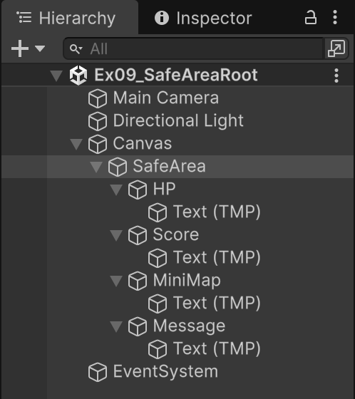
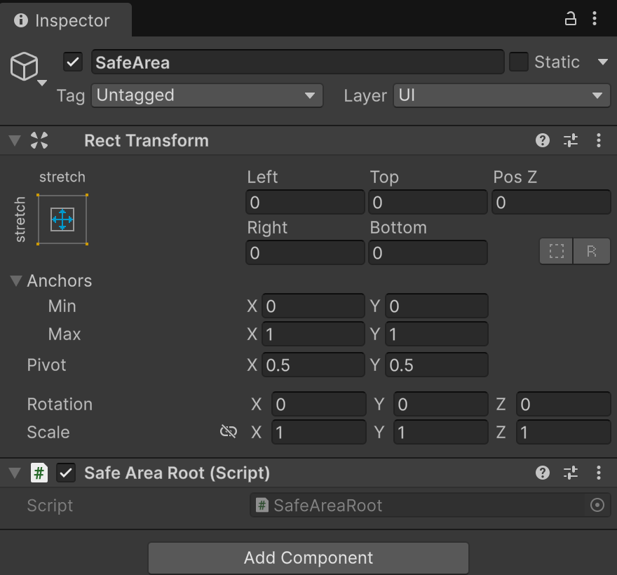
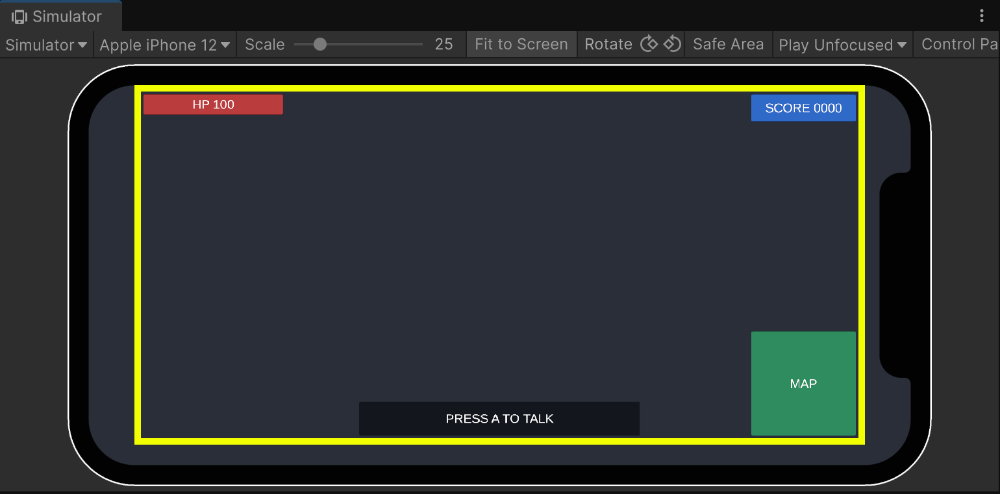
確認：Play 中、SCORE と MAP がノッチや角丸に欠けずに表示されることを確認します。Safe Area をオンにして、4 つの部品すべてが黄色い枠の内側にあることも見ておきます。確かめたら Play を止めます。
SafeAreaRoot.cs の全文です。配布物に入っているので書き写す必要はありませんが、行ごとの意味を読んでおきましょう。
using UnityEngine;
/// Canvas 直下に置く。Screen.safeArea をアンカーに反映(回転・解像度変化にも追従)
public class SafeAreaRoot : MonoBehaviour
{
Rect _applied;
void Awake() { Apply(); }
void Update() { if (Screen.safeArea != _applied) Apply(); } // 回転対応
void Apply()
{
_applied = Screen.safeArea;
var rt = (RectTransform)transform;
rt.anchorMin = new Vector2(_applied.xMin / Screen.width, _applied.yMin / Screen.height);
rt.anchorMax = new Vector2(_applied.xMax / Screen.width, _applied.yMax / Screen.height);
rt.offsetMin = rt.offsetMax = Vector2.zero;
}
}| 行 | していること |
|---|---|
Rect _applied; | 最後に当てはめたセーフエリアを覚えておく変数です |
void Awake() { Apply(); } | シーンが始まったときに 1 回、セーフエリアを当てはめます |
void Update() { if (Screen.safeArea != _applied) Apply(); } | 毎フレーム、今のセーフエリアが覚えている値と違うかを比べ、違ったときだけ当てはめ直します |
_applied = Screen.safeArea; | 端末が教えてくれるセーフエリア（ピクセル単位の四角形）を受け取ります |
var rt = (RectTransform)transform; | このオブジェクトの Rect Transform を取り出します |
rt.anchorMin = ... | セーフエリアの左下の角を画面の幅と高さで割り、0〜1 の割合にしてアンカーの Min に入れます |
rt.anchorMax = ... | 右上の角も同じように割合にして、アンカーの Max に入れます |
rt.offsetMin = rt.offsetMax = Vector2.zero; | 端からの余白（Left・Bottom・Right・Top）を 0 にして、アンカーの範囲いっぱいに広げます |
iPhone 12 の横持ちなら、Min は 141 ÷ 2532 ≒ 0.056 と 63 ÷ 1170 ≒ 0.054、Max は 2391 ÷ 2532 ≒ 0.944 と 1 になります。Ex04 では 1 点だったアンカーを範囲に広げ、その範囲をスクリプトから端末に合わせて当てはめていることになります。
Update で毎フレーム比べる理由
セーフエリアは、ゲームの途中でも変わります。スマホを縦から横に回したり、パソコンでウィンドウの大きさを変えたりすると、そのたびにノッチの位置や画面の幅が変わるからです。Awake の 1 回だけでは、回転した後に古いセーフエリアのままになってしまいます。
とはいえ、毎フレーム当てはめ直す必要はありません。四角形どうしの比較はとても軽い処理なので、毎フレーム「変わったか」だけを確かめ、変わったときだけ Apply を呼んでいます。HUD の部品はすべて SafeArea の子なので、親が縮めば子は自分のアンカーに従って内側へ移ります。
この仕組みは、画面を作り始める最初の 1 回目から入れておくのがおすすめです。部品を置いた後から SafeArea の子へ移し替えるより、先に SafeArea を作ってその中に置いていくほうが、手間も事故も少なくなります。
3. 情報の層：何をどこに、どんな強さで
この層で守るのは、読んでほしい情報が、画面が変わってもいつもの場所に、欠けずに見えていることです。画面の幅が変わったらメッセージの帯が途中で途切れた、通知の文字が増えたらパネルが画面の外へはみ出した、という場面では、ボタンは押せても情報が届きません。
この章では、アンカーを点ではなく辺に広げた帯と、ピボットで伸び方を決めた通知パネルを作ります。最後に「やってみよう」で、HUD の部品を「どの隅の仲間か」で置き分けます。
左右いっぱいのバーを作る
Assets/Lessons/H02_CanvasAnchor/Scenes/Ex05_AnchorStretch.unity
Ex04 ではボタンのアンカーを右上の 1 点に置き、Ex09 では SafeArea のアンカーを全面に広げました。今度は同じボタンのある画面で、アンカーを下の辺いっぱいに広げると、画面の幅が変わってもバーが左右いっぱいに伸び縮みします。
使うもの
- Panel：画面全体を覆う四角い板です。背景や帯に使います
- stretch のプリセット：アンカーを点ではなく辺に広げます
手順
- Play 中なら Play ボタンを押して止めます。Project ウィンドウで
Ex04_AnchorTopRightのシーンをダブルクリックして開きます（右上にボタンがある状態です） - Ex08 で Simulator に切り替えた左上のドロップダウンで Game を選んで Game ビューに戻し、Game ビューを Full HD (1920x1080) にします
- Hierarchy で Canvas を右クリックし、UI (Canvas) → Panel をクリックします（画面全体を覆う半透明の板ができます）
- Panel が選ばれた状態で Return（Windows は F2）を押し、名前を
BottomBarにします - Anchor Presets を開き、列が stretch、行が bottom のマスを、Shift + Alt（Mac は Option）を押しながらクリックします
- Height に
120を入力します
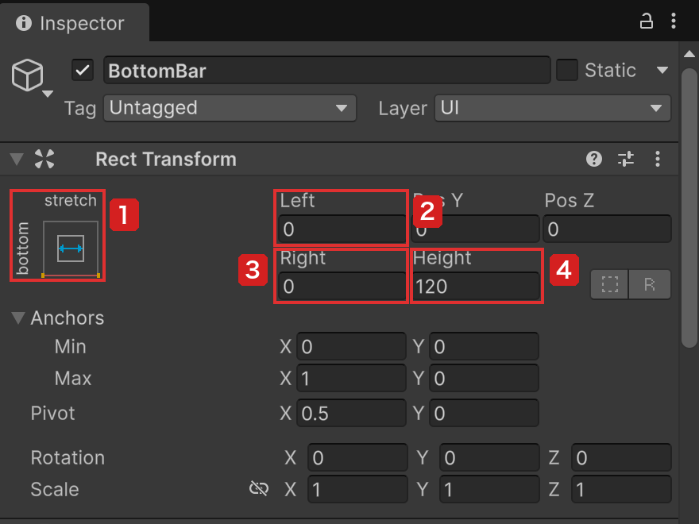
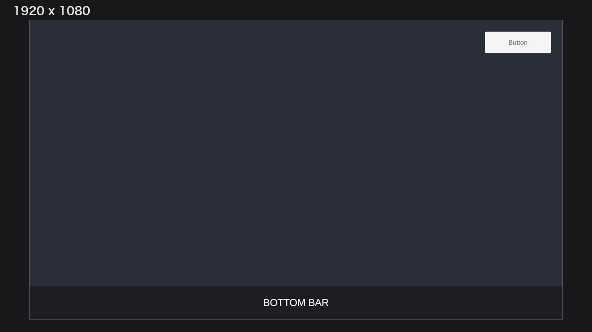
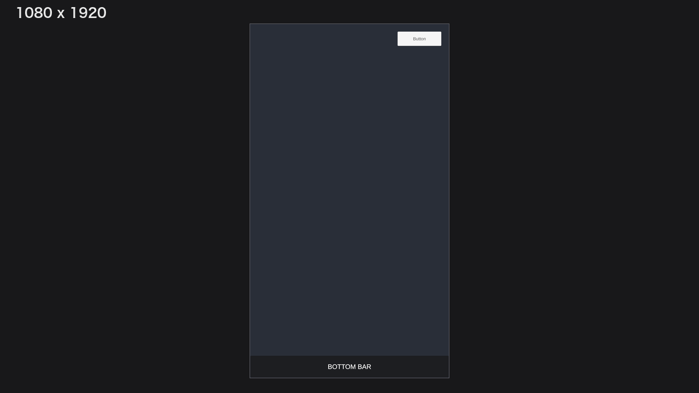
確認：Inspector の欄が Left・Pos Y・Right・Height になっていることと、Portrait (1080x1920) に切り替えても帯が左右の端まで届いていることを確認します（配布シーンでは帯に色と文字を足しています）。
Left / Right は「端からの余白」
アンカーが辺いっぱいに広がると、幅は親の幅で決まるので、Width の代わりに「左端からの余白（Left）」と「右端からの余白（Right）」を指定します。Left = 0、Right = 0 なら、幅は画面の幅と同じです。Web の CSS で言えば width: 100% に近い指定を、アンカーで表していることになります。
右端から出る通知パネルとピボット
Assets/Lessons/H02_CanvasAnchor/Scenes/Ex06_Pivot.unity
前の作例まではアンカーを動かしました。今度はアンカーを右端に固定したまま、ピボットだけを変えて、幅を広げたときの伸び方を比べます。
使うもの
- ピボット（Pivot）：要素自身の基準点です。大きさを変えるときは、この点を動かさずに伸び縮みします
- Duplicate：選んだオブジェクトを複製します（Cmd + D、Windows は Ctrl + D）
手順
- Hierarchy で Canvas を右クリックし、UI (Canvas) → Panel を作って、名前を
Notice_Pivot1にします - Anchor Presets で、列が right、行が middle のマスを Shift + Alt（Mac は Option）を押しながらクリックします（Pivot が 1, 0.5、Pos X が 0 になります）
- Width に
300、Height に120、Pos Y に-120を入力します - Notice_Pivot1 を選んだまま Cmd + D（Ctrl + D）で複製し、名前を
Notice_Pivot05にします - Notice_Pivot05 の Pivot X に
0.5、Pos X に-150、Pos Y に120を入力します（どちらも右端にぴったり付いた状態になります） - 2 つのパネルの Width を、それぞれ
300から500に変えます
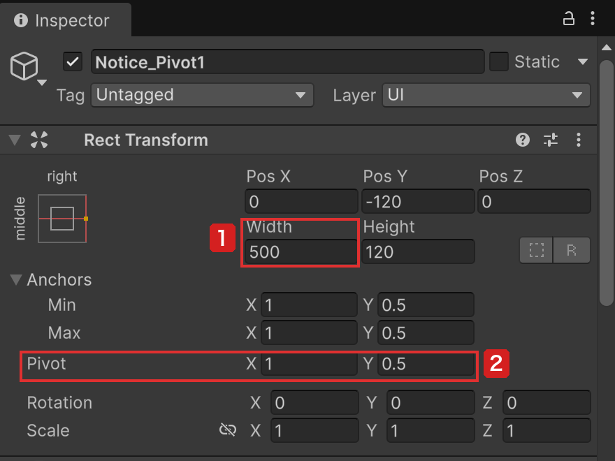
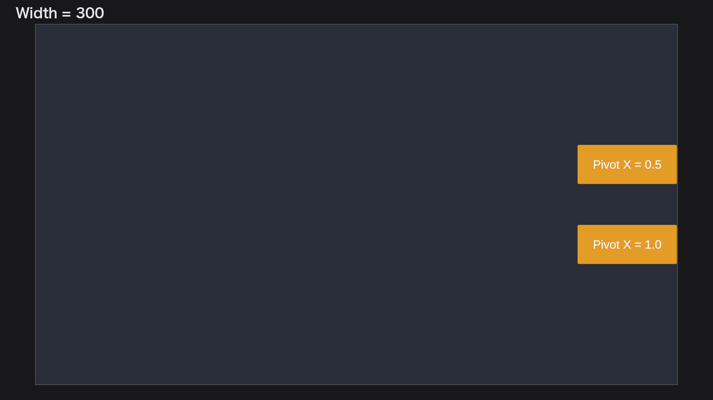
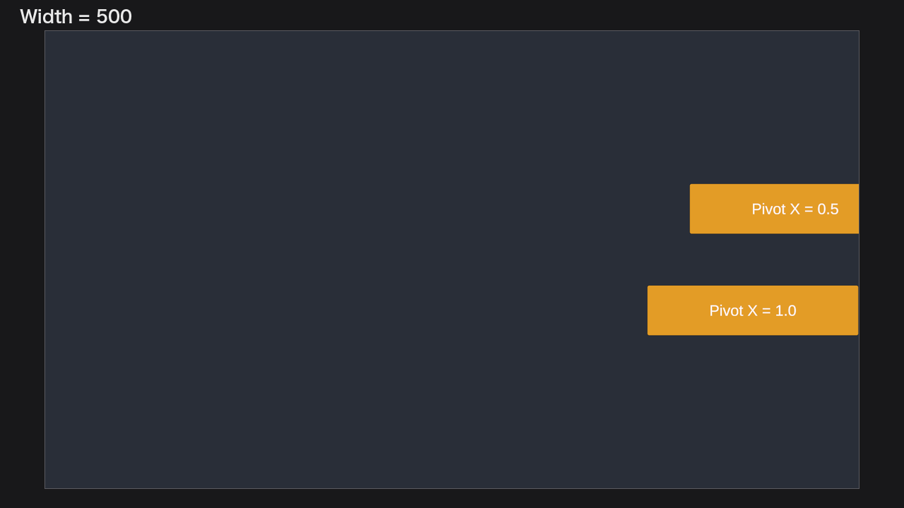
| Pivot X | Width 300 のとき | Width 500 のとき | |
|---|---|---|---|
| Notice_Pivot05（上） | 0.5 | 左端は右端から 300、右端は画面の右端 | 左端は右端から 400、右端は画面の外へ 100 はみ出す |
| Notice_Pivot1（下） | 1 | 左端は右端から 300、右端は画面の右端 | 左端は右端から 500、右端は画面の右端のまま |
確認：Width を 500 にしたとき、Pivot X = 0.5 のパネルは左右に 100 ずつ伸びて右側が画面からはみ出し、Pivot X = 1 のパネルは右端を保ったまま左へ 200 伸びることを確認します（配布シーンは Width 500 にした後の状態です。300 に戻すと比べられます）。
アンカーとピボットの役割分担
アンカーは「親のどこに留めるか」、ピボットは「自分のどこを合わせるか」です。右端から出てくる通知のように、右端を動かしたくない要素は、右アンカーと右ピボットを組み合わせます。そうしておけば、文字が増えてパネルの幅が変わっても、右端は画面の端に付いたままです。
やってみよう：HUD の 4 隅
Assets/Lessons/H02_CanvasAnchor/Scenes/Ex06_Example.unity
体力（左上）、スコア（右上）、ミニマップ（右下）、メッセージ（下中央）の 4 つを置いた HUD の一例です。ここまでの作例を組み合わせると作れます。
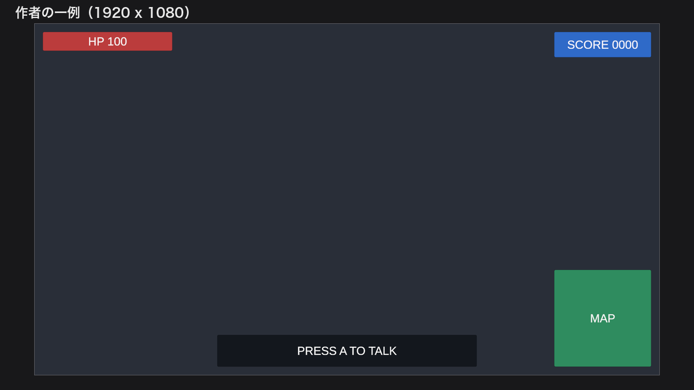
部品を置く前に、それぞれの情報が「どの隅の仲間か」を決めておくと、置き場所に迷いにくくなります。いつも目に入っていてほしい情報なのか、必要なときに見に行く情報なのか、という優先度の違いで、置く隅を分けて考えてみましょう。
これを参考に、部品を増やしたり、置く隅を入れ替えたりしてみましょう。Game ビューを Portrait (1080x1920) に切り替えても崩れないかを確かめながら進めると、アンカーの選び方が身につきます。
4. 見た目の層：どの画面でも同じ比率に
この層で守るのは、作ったときのレイアウトの比率です。1920 x 1080 で整えた HUD が、4K の画面では画面に対して半分の大きさに縮んで見える、という場面では、位置は合っていても、作り手が決めた大きさのバランスが崩れています。
アンカーで位置は守れるようになりました。この章では Canvas Scaler で、UI の大きさを画面に追従させます。
解像度が変わっても同じ大きさに見せる
Assets/Lessons/H02_CanvasAnchor/Scenes/Ex07_CanvasScaler.unity
前の章の「やってみよう」の HUD はそのままに、Canvas Scaler の設定だけを変えると、4K の画面でも UI が同じ割合の大きさで表示されます。
使うもの
- Canvas Scaler：画面の解像度に合わせて、Canvas 全体を拡大縮小するコンポーネントです
- Reference Resolution：「この解像度のときに、作ったとおりの大きさで見える」という基準の解像度です
- Match：幅と高さのどちらに合わせて拡大率を決めるかの割合です（0 = 幅、1 = 高さ）
手順
- Ex06_Example のシーンを開き、Game ビューを Full HD (1920x1080) にします
- Game ビューを 4K UHD (3840x2160) に切り替え、HUD が小さくなることを見ます
- Hierarchy で Canvas を選び、Inspector の Canvas Scaler で UI Scale Mode を Scale With Screen Size にします
- Reference Resolution の X に
1920、Y に1080を入力します - Screen Match Mode が Match Width Or Height になっていることを確かめ、Match のスライダーを右端（
1）にします
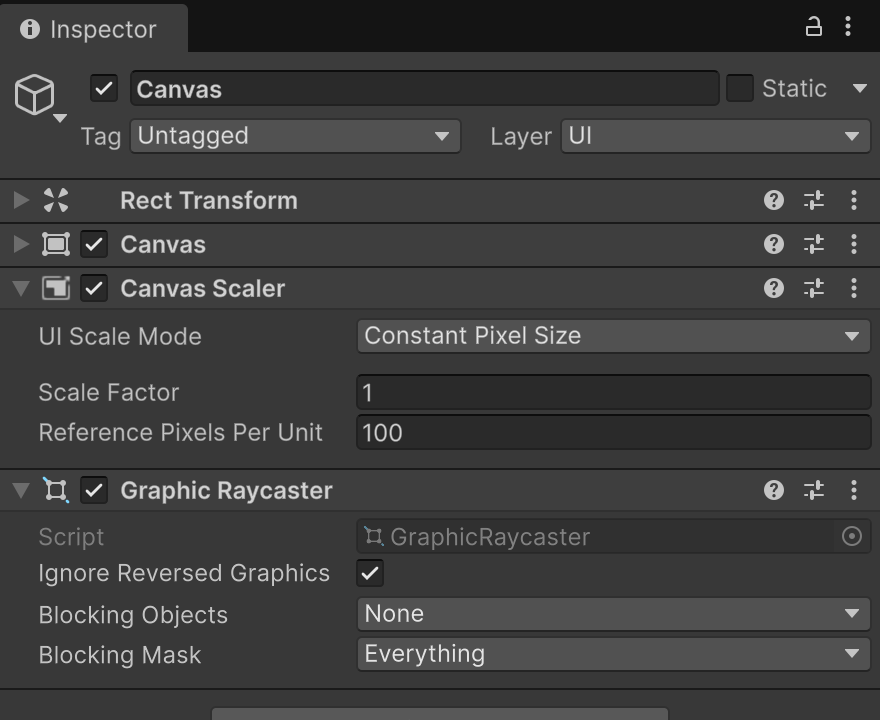
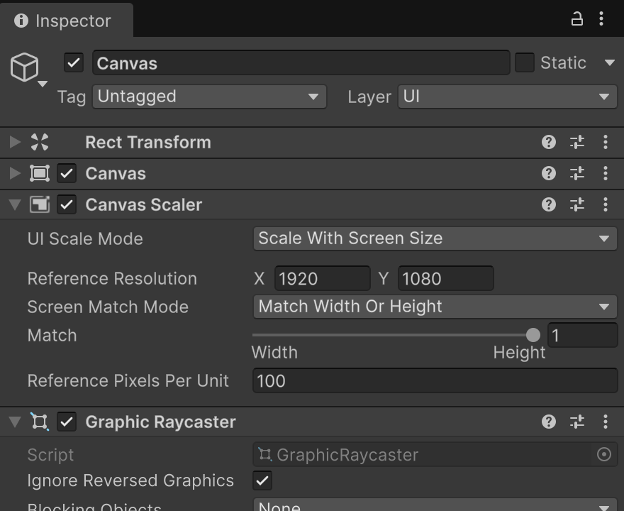
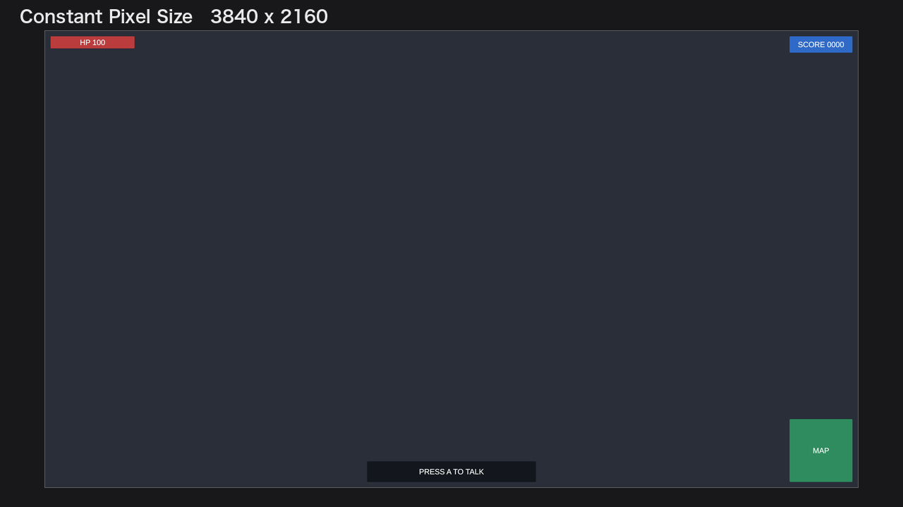
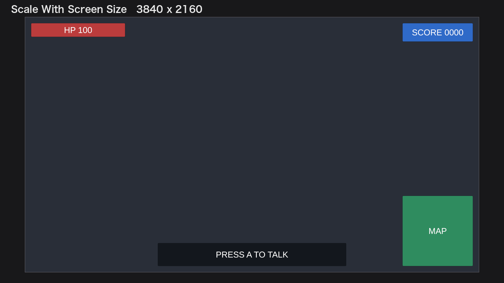
確認：Scale With Screen Size にした後は、Full HD (1920x1080) と 4K UHD (3840x2160) を切り替えても、HUD が画面に対して同じ割合の大きさで見えることを確認します。
Match を 0 と 1 で比べる
画面の比率が基準と違うと、幅と高さの拡大率が食い違います。21:9 のウルトラワイド画面（2560 x 1080）で考えてみます。幅は 2560 ÷ 1920 ≒ 1.33 倍、高さは 1080 ÷ 1080 = 1 倍です。
| Match | 何に合わせるか | 拡大率 | MAP（300 x 300）の表示 |
|---|---|---|---|
| 0 | 幅 | 2560 ÷ 1920 ≒ 1.33 | 約 400 x 400 ピクセル |
| 1 | 高さ | 1080 ÷ 1080 = 1 | 300 x 300 ピクセル |
試すときは、Ex03 と同じ手順で Game ビューに 2560 x 1080 のサイズ（Label は UltraWide など）を追加し、Match のスライダーを左右に動かします。
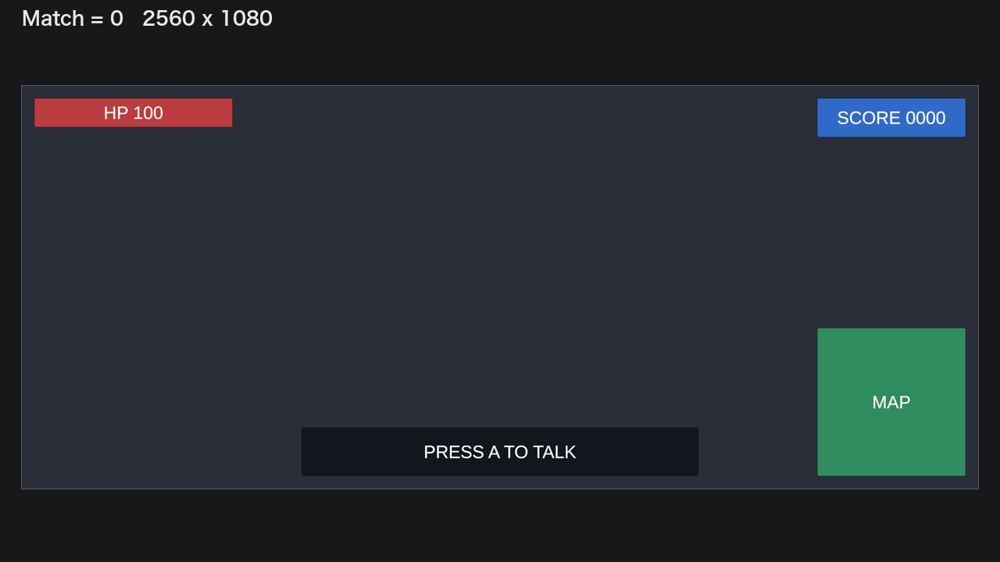
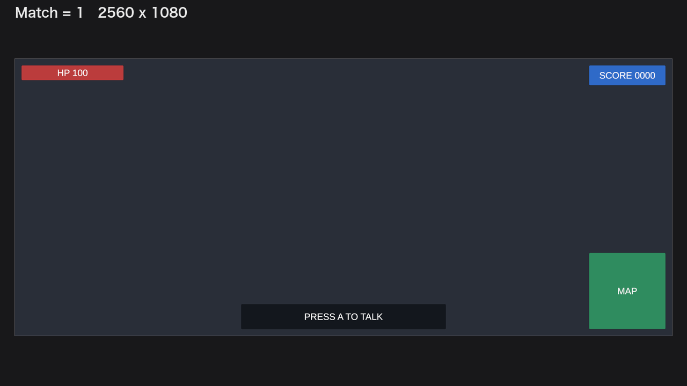
原理編の第2章では、横持ちのゲームなら高さ合わせ（Match = 1）が無難だとしています。画面が横に広がるとき、多くのゲームは左右の視野が広がる作りなので、UI の大きさは高さで安定させ、広がった左右はアンカーに吸収させる、という考え方です。
一方、縦持ちのスマホアプリでは、基準を 1080 x 1920、Match を 0.5 にすることも多いです。作るものの持ち方に合わせて決めるとよいでしょう。
5. 見切れる画面と付き合ってきた歴史
セーフエリアは、スマホのノッチと一緒に生まれた考え方ではありません。画面の端が見えないかもしれない、という前提は、テレビの時代からずっと作り手の悩みでした。この章では、その歴史と、たくさんの画面を破綻なく作るための現場の工夫を 1 つずつ紹介します。
テレビのオーバースキャンとタイトルセーフ
ブラウン管のテレビは、映像を画面より少し大きめに映していました。これをオーバースキャン（overscan）と呼びます。
ブラウン管は機械ごとの映り方のばらつきが大きく、画面の端に黒い隙間が出ないよう、わざとはみ出させていたのです。そのぶん、放送された映像の外周は家庭のテレビでは見えませんでした。
1957 年、米国の映画テレビ技術者協会（SMPTE）の学会誌に、家庭のテレビで実際にどこまで映るかを NBC のスタジオで調べた論文が載りました。その結果をもとに、SMPTE は 1961 年に、文字を置いてよい範囲を「画面の幅と高さの 80%」の四角とする推奨を出しています。
これがタイトルセーフ（Safe Title Area）です。1963 年には、動きのある被写体を収める範囲として 90% のアクションセーフ（Safe Action Area）も決められました。
薄型テレビが普及すると、端が大きく見切れることは減りました。SMPTE は 2009 年以降の規格で、タイトルセーフを幅と高さの 90%、アクションセーフを 93% に広げています。
それでも「大事な文字は端から離して置く」という習慣は残りました。家庭用ゲーム機の UI が画面の端から少し内側に寄せて作られているのは、この流れを受けたものと考えられます。
今日の SafeAreaRoot は、この「見えない端を避ける」作業を、機種ごとの値に合わせて自動で行う仕組みと言えます。ノッチや角丸は、形を変えて戻ってきたオーバースキャンと捉えると分かりやすいでしょう。
部品の仕組みを先に作る：『Marvel's Midnight Suns』
GDC 2023 で、Turtle Rock Studios の Joel Gonzales さんが「UI Engineering Patterns from 'Marvel's Midnight Suns'」という講演をしました。『Marvel's Midnight Suns』は 2022 年 12 月に発売されたタクティクス RPG で、開発には 5 年かかっています。講演資料によると、作る必要があった画面はおよそ 150 枚で、その 9 割が戦闘の外側のメニュー画面でした。
この量を手作業で 1 枚ずつ並べると、どこかで必ず破綻します。そこでチームは、ボタンや一覧のような共通の部品（Control）を画面に「落として使える」仕組みを先に作り、その上で画面を量産しました。部品に機能をまとめておけば、別の画面でも同じ振る舞いを使い回せます。
今日の作業も同じ順序でできています。SafeArea というルートを最初に 1 つ作り、その中に部品を置いていけば、あとから画面が増えても全部が自動でセーフエリアに収まります。土台を先に作ってから中身を並べる、という順番は、学校の課題でも現場の大作でも変わらないと言えそうです。
出典：SMPTE の経緯は NAB「Television Safe Areas Redefined」（2010）、講演の数値は GDC Vault で公開されている Joel Gonzales さんの講演資料（GDC 2023）によります。
6. まとめ
今日は、土台である画面の形や解像度を変えたときに、三つの層でそれぞれ何が壊れるかを見て、別々の道具で直しました。
- 体験の層（アンカー・セーフエリア）：押したいボタンが、どの画面でも見えて押せることを守りました。アンカーで隅に留め、セーフエリアで見えることを保証します。画面の端ぴったりに置いたボタンは、エディタでは見えても実機では欠けることがあります。
- 情報の層（アンカーの範囲・ピボット・隅の仲間分け）：帯や通知が途中で切れず、いつもの場所にあることを守りました。アンカーは、要素が「どの隅の仲間か」を機械に伝える設定です。講義 D02 の言葉では、アンカー設定はレイアウトの意図を機械に伝える作業でした。所属が決まらない要素は、置き場所を迷っている要素だと考えられます。
- 見た目の層（Canvas Scaler）：大きさの追従です。位置はアンカー、大きさはスケーラ、という二段構えがマルチ解像度対応の基本になります。
Web のレイアウトは内容に合わせて流れますが、ゲームの UI は固定の舞台に貼りつけて、画角の変化に耐えさせます。今日の道具は、土台が変わっても三つの層を崩さずに「耐えさせる」ための仕組みでした。
なお、Canvas にはもう 1 つ、UI を 3D 空間の中に板として置く World Space というモードがあります。こちらは第10回で扱います。